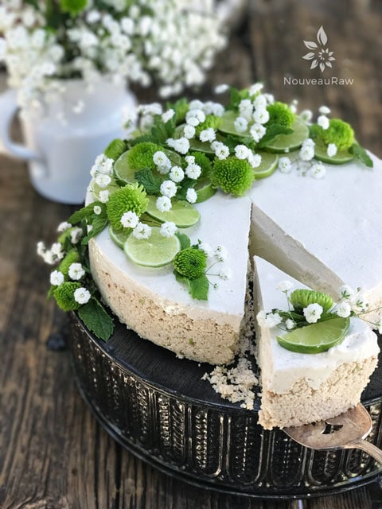

Key Lime Pie
 ~ raw, vegan, gluten-free, nut-free~
~ raw, vegan, gluten-free, nut-free~
This pie is a true, mouth-watering dessert! Ever since I have known Bob, he has been on the hunt for the “perfect” key lime pie. Most fall short of his expectations until this glorious recipe came along.
Perfection Achieved!
Perfection is a strong word to use; I realize that, but I am 100% confident in making such a statement right now, here today! Not only did Bob love and devour it, but, per his request, it has become a staple dessert in our household. These days I rarely make it in a 9″ pie pan though. I like to either use either small mason jars or 3 oz Dixie cups.
If stored properly, they can keep in the freezer for up to three months. That way, every so often, I will move a few of them from the freezer to the fridge, this way Bob can open the fridge door, grab a dessert and go. No slicing, no dishing… easy peasy Key Lime Pie. Plus, it is perfect for portion control, so he doesn’t overdo it and get a tummy ache.
Looking for a nut-free dessert? The only part that contains nuts is the crust, and you could easily remedy that. I’ll share how you can use coconut instead of nuts under the “crust preparation” below. You could even go as far as making it without the crust, which I often do. By the way, you will notice that this pie is not green! I know that many of you are under the false idea that key lime pie is green. Well, the truth is it isn’t meant to be green, but rather a natural creamy yellow…. slightly sweet, and out of this world delicious.

I would like to share why I use lecithin because I know, inquiring minds just want to know. Sunflower lecithin is made up of essential fatty acids and B vitamins. It helps to support healthy function of the brain, nervous system and cell membranes. It also lubricates joints; helps break up cholesterol in the body. Lecithin comes in two forms, powder and liquid.
I prefer the powdered sunflower lecithin because I can’t use soy products and the powdered version seems to be milder in taste. Besides all the nutritional benefits, it is a natural emulsifier that binds the natural fats with liquids to help create a creamy consistency.
This recipe also calls for Irish Moss gel, and I know that can be challenging to find, let alone make. I often make this recipe without the Irish moss, and it comes out fine, just not as firm as it could be. In the photos used in this posting, I didn’t use it, and as you can see that the pie is holding its shape quite well.
One last tidbit that I wanted to share is that I prefer to use a combination of lemon and lime juice rather than the juice of actual key limes, as they are tiny, expensive, and not always easy to find. I noted below in the ingredient list on how to measure out my lemon and lime combination.
Sugar-Free Option
I know that this recipe posting is getting quite long, but if you will just give me a few more minutes of your time, I would appreciate it. I get many requests for desserts that are sugar-free (even fresh or dried fruit sweetened). Bob and I also watch our sugar consumption as well. So for a few years now, I have been playing around with Lohan Guo Monkruit and Erythritol.
They are both natural alcohol sugars made from non-GMO plant sources. And are classified as ANTI-OXIDANTS that fight free radicals. Since they pass right through the body without being absorbed, there is no effect on the gastrointestinal tract (no gas or diarrhea). These “sugars” have zero calories and are zero glycemic. Also, they don’t raise blood sugar or insulin which makes them great for people with diabetes… plus it won’t feed Candida or yeast. (source) Markus Sweet is a brand that I have been using, it is a combination of those two sweeteners.
With all of that, I will now release you to go play in the kitchen. Slip that apron on, tighten those strings, and know that every dish dirtied brings you one step closer to a magnificent, healthy dessert. Have fun and let me know if you try this recipe!
Yields 8.5 – 9″ pie, serves 8-16
Crust: (see below for nut-free crust)
- 1 cup (113 g) raw pecans, soaked & dehydrated
- 1 1/2 cups (203 g) raw macadamia nuts
- 1/2 tsp (1 g) ground Ceylon cinnamon
- 1/4 tsp (2 g) Himalayan pink salt
- 6 Tbsp (138 g) water
- 1/4 cup (129 g) packed pitted, Medjool dates
- 1 Tbsp lime zest
First layer:
- 1 1/2 cups (378 g) heavy Thai coconut milk
- 1/3 cup (93 g) ripe avocado, mashed
- 1 cup (308 g) maple syrup
- 1 cup key lime juice (or 3/4 cup (162 g) lime juice + 1/4 cup (49 g) lemon juice)
- 1/4 tsp (2 g) Himalayan pink salt
- 1 cup (198 g) raw coconut oil, warmed to liquid
- 3 Tbsp (22 g) sunflower lecithin powder
Second layer:
- 1 1/2 cups (378 g) heavy Thai coconut milk
- 1/2 cup (130 g) Thai coconut meat
- 1/2 cup maple syrup or 1/2 cup (112 g) Erythritol (powdered)
- 1/4 cup Irish Moss gel
- 1 tsp vanilla extract
- 1/4 tsp (2 g) Himalayan pink salt
- 1/2 cup (108 g) coconut oil, warmed to liquid
- 2 Tbsp (14 g) sunflower lecithin powder
- lemon or lime slices for garnish
Preparation:
Crust:
- Place the pecans, macadamia nuts, cinnamon and salt in a food processor outfitted with an “S” blade and process to a crumbly meal.
- To make this crust nut-free, replace the pecans and macadamia nuts with 2 1/2 cups (248 g) unsweetened, shredded coconut. Follow the same instructions.
- Add water, dates, and lime zest, process again.
- The mixture should be loose, yet hold together when pressed firmly into your palm.
- Do not over-process or the natural oils will separate from the fiber and make the crust oily.
- Tip: zest the limes before juicing them. Much easier on the fingertips.
- Press mixture into a 9” deep glass dish and set aside.
First layer:
- In a high-powered blender combine the; coconut milk, avocado, sweetener, lime juice, and salt. Blend until the filling is creamy smooth. You shouldn’t detect any grit. If you do, keep blending.
- This process can take 1-3 minutes, depending on the strength of the blender. Keep your hand cupped around the base of the blender carafe to feel for warmth. If the batter is getting too warm, stop the machine and let it cool. Then proceed once cooled.
- You can use any liquid sweetener. Just be aware of the different flavors and colors that may impact cake.
- If you wish to reduce the sugar content, I recommend replacing the liquid sweetener with 3/4 cups (179 g) of Markus Sweet or non-GMO Erythritol. Be sure to grind it to a fine powder after measuring it out using a spice grinder, a coffee grinder, Magic Bullet, or Vitamix dry container.
- After powdering the sweetener, let it rest a little before removing the lid. If you open it right away, stand back and don’t inhale deeply. It will look like a dry ice smoke experiment… (fun to do with the kiddos around?)
- If you can’t find Young Thai coconut milk, you can use canned full-fat coconut milk (1 BPA-free can)
- With a vortex going in the blender, drizzle in the coconut oil and then add the lecithin. Blend just long enough to incorporate everything together. Don’t over process. The batter will start to thicken.
- What is a vortex? Look into the container from the top and slowly increase the speed from low to high, the batter will form a small vortex (or hole) in the center. High-powered machines have containers that are designed to create a controlled vortex, systematically folding ingredients back to the blades for smoother blends and faster processing… instead of just spinning ingredients around, hoping they find their way to the blades.
- If your machine isn’t powerful enough or built to do this, you may need to stop the unit often to scrape the sides down.
- Pour the batter into the pan.
- Gently tap the pan on the counter to remove any air bubbles.
- Chill in the fridge or freezer until firm, about 3 to 4 hours or overnight.
- You want the first layer firm enough so that when you add the top layer, it doesn’t “fall into” the first layer.
Second layer:
- Back in the blender combine; coconut milk, coconut meat, sweetener, Irish Moss gel, vanilla, and salt. Blend until smooth.
- With a vortex going in the blender, drizzle in the coconut oil and then add the lecithin. Blend just long enough to incorporate everything together. Don’t over process. The batter will start to thicken.
- Pour over the firm, chilled pie. Spread evenly and gently tap on the counter top to bring up any bubbles. Slide back into the fridge or freezer to firm up.
- Garnish with lemon/lime slices, or whatever you wish. Do this prior to serving.
- Store the cheesecake in the fridge for 3-5 day or up to 3 months in the freezer. Be sure that it is well sealed to avoid fridge odors.
© AmieSue.com